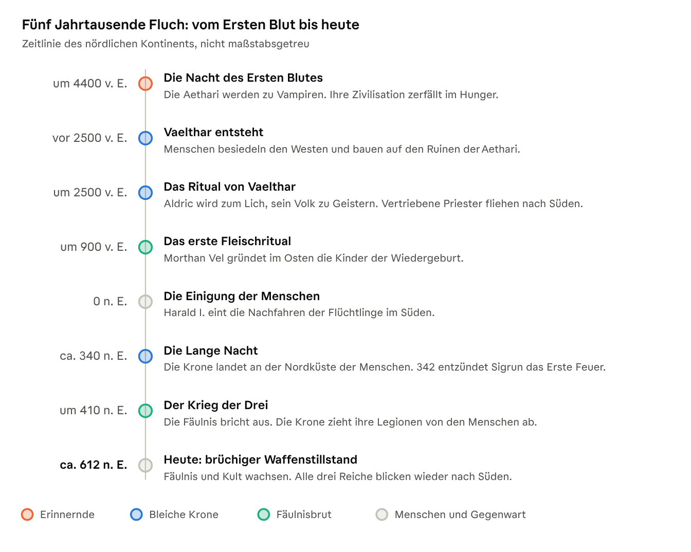
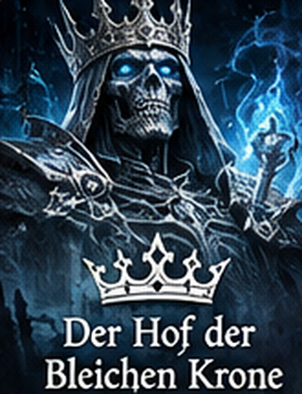
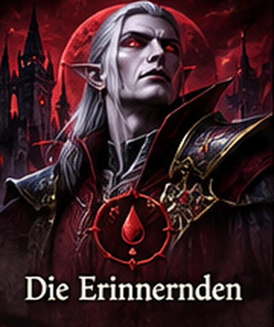
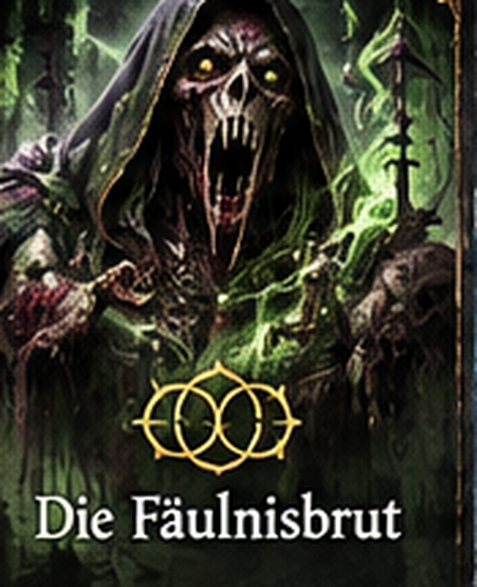
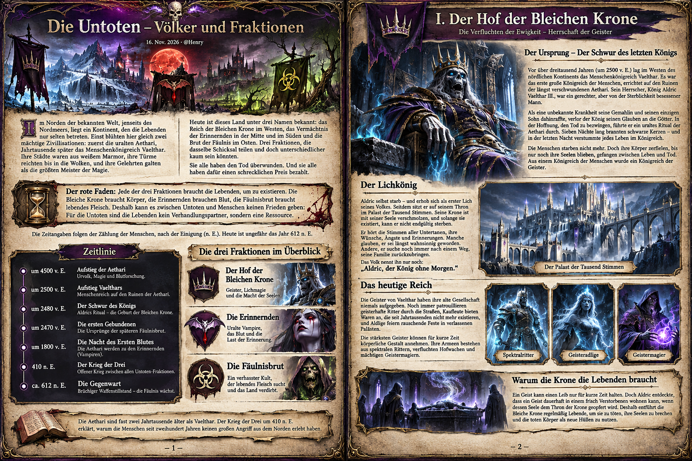
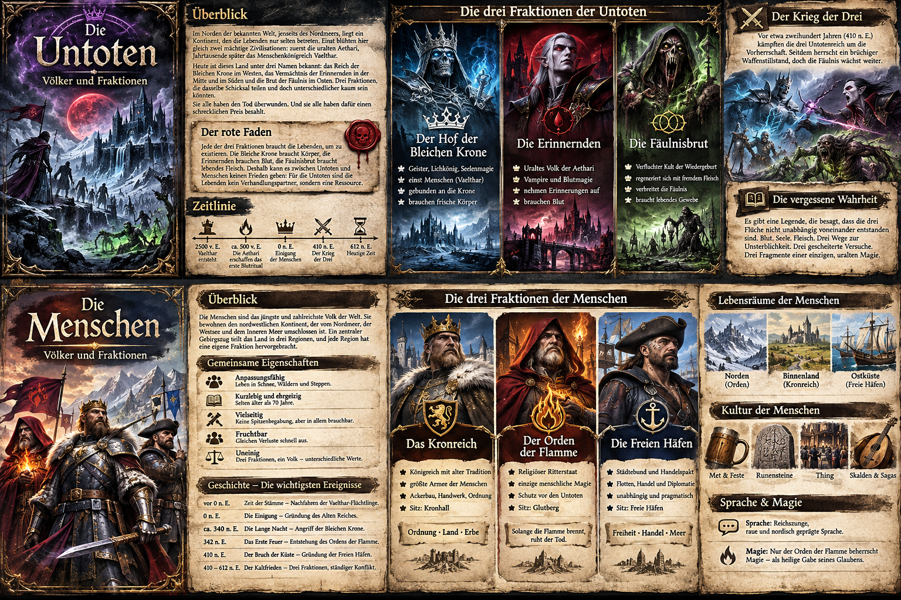

Die Untoten – Völker und Fraktionen
Nov 16, 2026 · @Henry
Im Norden der bekannten Welt, jenseits des Nordmeers, liegt ein Kontinent, den die Lebenden nur selten betreten. Einst blühten hier gleich zwei mächtige Zivilisationen: zuerst die uralten Aethari, Jahrtausende später das Menschenkönigreich Vaelthar. Ihre Städte waren aus weißem Marmor, ihre Türme reichten bis in die Wolken, und ihre Gelehrten galten als die größten Meister der Magie.
Heute ist dieses Land unter drei Namen bekannt: das Reich der Bleichen Krone im Westen, das Vermächtnis der Erinnernden in der Mitte und im Süden und die Brut der Fäulnis im Osten. Drei Fraktionen, die dasselbe Schicksal teilen und doch unterschiedlicher kaum sein könnten.
Sie alle haben den Tod überwunden. Und sie alle haben dafür einen schrecklichen Preis bezahlt.
Der rote Faden: Jede der drei Fraktionen braucht die Lebenden, um zu existieren. Die Bleiche Krone braucht Körper, die Erinnernden brauchen Blut, die Fäulnisbrut braucht lebendes Fleisch. Deshalb kann es zwischen Untoten und Menschen keinen Frieden geben: Für die Untoten sind die Lebenden kein Verhandlungspartner, sondern eine Ressource.
Die Zeitangaben folgen der Zählung der Menschen, nach der Einigung (n. E.). Heute ist ungefähr das Jahr 612 n. E.
Zeitlinie

Zeitlinie des nördlichen Kontinents · 8 Ereignisse
Die Aethari sind fast zwei Jahrtausende älter als Vaelthar. Der Krieg der Drei um 410 n. E. erklärt, warum die Menschen seit zweihundert Jahren keinen großen Angriff aus dem Norden erlebt haben.
I. Der Hof der Bleichen Krone

Die Verfluchten der Ewigkeit – Herrschaft der Geister
Der Ursprung – Der Schwur des letzten Königs
Vor über dreitausend Jahren (um 2500 v. E.) lag im Westen des nördlichen Kontinents das Menschenkönigreich Vaelthar. Es war das erste große Königreich der Menschen, errichtet auf den Ruinen der längst verschwundenen Aethari. Seine weißen Marmorstädte stammten zum Teil noch aus deren Zeit.
Sein Herrscher, König Aldric Vaelthar III., war ein gerechter, aber von der Sterblichkeit besessener Mann. Er hatte unzählige Kriege überstanden und sein Volk zu Wohlstand geführt. Doch eines konnte selbst er nicht besiegen: den Tod.
Als eine unbekannte Krankheit seine Gemahlin und seinen einzigen Sohn dahinraffte, verlor der König seinen Glauben an die Götter. Er ließ Tempel schließen und Priester vertreiben. Viele von ihnen flohen mit ihren Familien über das Nordmeer nach Süden. Ihre Nachfahren wurden zu den Stämmen, aus denen Jahrtausende später die Menschen des Kronreichs, der Freien Häfen und des Ordens hervorgingen. Die Sprache Vaelthars ist dort längst vergessen.
Tief unter dem Palast entdeckten Aldrics Gelehrte eine uralte Schrift der Aethari, deren Worte nicht für die Augen Sterblicher bestimmt waren. Darin war von einem Ritual die Rede, das den Tod selbst aus einem Königreich verbannen sollte.
Sieben Nächte lang brannten schwarze Kerzen. Sieben Nächte lang wurde der Himmel dunkler. Und in der letzten Nacht verstummte jedes Lebewesen im Königreich für einen einzigen Herzschlag. Dann begann der Fluch.
Die Menschen starben nicht mehr. Doch ihre Körper alterten weiter. Ihre Haut verdorrte, ihre Knochen zerfielen, und schließlich lösten sich ihre Körper vollständig auf. Was blieb, waren ihre Seelen, gefangen zwischen Leben und Tod. Aus einem Königreich der Menschen wurde ein Königreich der Geister.
Nur an den Rändern des Reiches, wo die Kraft des Rituals schwächer war, lösten sich manche Seelen nicht vom Körper. Sie blieben in ihren eigenen Leichnamen gefangen. Aus diesen Gebundenen sollte später die Fäulnisbrut entstehen.
Der Lichkönig
Aldric selbst erlitt ein anderes Schicksal. Als Mittelpunkt des Rituals wurde seine Seele an seine Krone gebunden. Sein Körper starb, doch durch die gewaltige Magie erhob er sich als erster Lich seines Volkes.
Seitdem sitzt er auf seinem Thron im Palast der Tausend Stimmen. Seine Krone ist mit seiner Seele verschmolzen. Solange sie existiert, kann Aldric nicht endgültig sterben. Er hört die Stimmen aller Untertanen seines Reiches: ihre Wünsche, ihre Ängste und ihre Erinnerungen.
Manche behaupten, er sei längst wahnsinnig geworden. Andere glauben, er suche noch immer nach einem Weg, seine Frau und seinen Sohn zurückzubringen. Das Volk nennt ihn nur noch: Aldric, der König ohne Morgen.
Das heutige Reich
Die Geister von Vaelthar haben ihre alte Gesellschaft niemals aufgegeben. Noch immer patrouillieren geisterhafte Ritter durch die Straßen. Kaufleute bieten Waren an, die seit Jahrtausenden nicht mehr existieren. Adlige feiern rauschende Feste in verlassenen Palästen. Es ist eine Gesellschaft, die sich weigert, ihre eigene Zerstörung anzuerkennen.
Die stärksten Geister können für kurze Zeit körperliche Gestalt annehmen. Schwächere erscheinen nur als Schatten oder leuchtende Silhouetten. Ihre Armeen bestehen aus spektralen Rittern, verfluchten Hofwachen (Geister in alten Rüstungen) und mächtigen Geistermagiern.
Warum die Krone die Lebenden braucht
Ein Geist kann einen Leib nur für kurze Zeit halten. Doch Aldric hat entdeckt, dass ein Geist dauerhaft in einem frisch Verstorbenen wohnen kann, wenn dessen Seele dem Tod freiwillig zugestimmt hat. So entsteht ein Draugr: ein Toter mit Verstand, Kraft und dem Willen eines Geistes aus Vaelthar.
Darum suchte die Krone in der Langen Nacht (ca. 340 n. E.) die Küsten der Menschen heim, und darum nährt sie heute den Kult der Bleichen Ewigkeit. Jeder Kultist, der der Krone sein Leben schwört, ist ein künftiges Gefäß. Mit genug Körpern könnte Vaelthar wieder ein Reich aus Fleisch und Stein werden.
Ihr Ziel: Den Fluch brechen, ohne ihre Existenz aufzugeben, und die einstige Größe Vaelthars wiederherstellen, notfalls in den Körpern der Lebenden.
Ihr größtes Geheimnis: Aldric weiß, dass seine Krone nicht nur sein eigenes Dasein bewahrt. Sie hält auch die Seelen seines gesamten Volkes in dieser Welt gefangen, und mit ihnen die Seele jedes Kultisten, der zum Draugr wurde. Der Kult glaubt, als Draugr selbst weiterzuleben. In Wahrheit trägt ein fremder Geist aus Vaelthar seinen Körper. Würde die Krone zerstört, könnten alle endlich sterben. Doch der König fürchtet, dass seine Familie ihn im Jenseits längst vergessen hat.
II. Die Erinnernden

Das erste Blut – Die uralte Zivilisation der Vampire
Der Ursprung – Das Blut der ersten Welt
Lange bevor Menschen ihre ersten Königreiche errichteten, lebte auf dem nördlichen Kontinent ein uraltes Volk. Sie nannten sich Aethari, die Erstgeborenen. Ihre Zivilisation war älter als die der heutigen Menschen und Elfen. Sie beherrschten die Astronomie, die Heilkunst und eine Form von Magie, deren Ursprung längst vergessen ist.
Die Aethari verehrten weder Götter noch Könige. Sie verehrten das Wissen. Und sie waren überzeugt, dass die Sterblichkeit die größte Schwäche aller intelligenten Wesen sei.
Im Laufe der Jahrhunderte entdeckten ihre Blutmagier, dass Erinnerungen nicht allein im Geist eines Wesens existierten. Ein Teil davon, so glaubten sie, lebte in seinem Blut. Durch mächtige Rituale gelang es ihnen, die Erinnerungen Verstorbener aus deren Blut zu gewinnen. Doch sie wollten mehr: ein Volk, dessen Wissen niemals verloren gehen konnte.
Der Fluch des ersten Blutes
Vor etwa fünftausend Jahren (um 4400 v. E.) vollzogen die Aethari unter der Führung der Hohepriesterin Serathia ein Ritual, das als Die Nacht des Ersten Blutes in ihre Geschichte einging. Tausende Angehörige ihres Volkes verbanden ihr Blut miteinander und übertrugen ihre Lebenskraft auf einen einzigen magischen Ursprung: den Blutbrunnen von Eryndor.
Die Wirkung war gewaltig. Ihre Körper hörten auf zu altern, ihre Krankheiten verschwanden, ihre Sinne wurden schärfer, und ihre Kräfte überstiegen alles, was Sterbliche erreichen konnten.
Doch die Magie hatte einen Fehler. Der Blutbrunnen konnte keine neue Lebenskraft erschaffen. Er konnte sie nur übertragen.
Schon wenige Tage nach dem Ritual spürten die Aethari einen unstillbaren Hunger. Normale Nahrung verlor ihren Geschmack. Sonnenlicht begann ihre Körper zu verbrennen. Ihre Herzen schlugen immer langsamer, bis sie schließlich stillstanden. Nur frisches Blut konnte ihre Existenz erhalten. Die ersten Vampire waren geboren.
Der Untergang der Aethari
Der Hunger zerstörte, was das Wissen aufgebaut hatte. Die Verwandelten nährten sich zuerst von den Aethari, die nicht am Ritual teilgenommen hatten, dann von ihren Dienern. Binnen eines Jahrhunderts waren die großen Städte leer und der Blutbrunnen von Eryndor versiegt.
Die meisten Überlebenden zogen sich in steinerne Grabanlagen in der Mitte und im Süden des Kontinents zurück und fielen in den Blutschlaf, eine Starre, in der ein Vampir kaum Blut braucht. So überdauerten sie Jahrtausende. Als später Menschen den leeren Westen besiedelten und Vaelthar auf den Ruinen der Aethari errichteten, erwachten die Ersten und nährten sich heimlich an ihnen.
Woher das Blut kommt
Das Ritual von Vaelthar traf nur das Königreich im Westen. Die Menschen in den südlichen Grenztälern blieben lebendig und flohen vor den Geistern. Die Erinnernden nahmen sie auf. Seitdem sind ihre Nachfahren die wichtigste Blutquelle des Kontinents:
Die Blutholde: Menschendörfer in den geschützten Tälern des Südens, heute einige Zehntausend Seelen. Sie zahlen den Blutzehnt und erhalten dafür Schutz vor Geistern und Fäulnis. Manche Häuser schließen echte Abkommen mit ihnen. Andere halten sie wie Vieh.
Gefangene und Handel: Verschleppte Seeleute, Gefangene aus Raubzügen an fremden Küsten und Menschen, die Schmuggler über das Nordmeer bringen. Die Erinnernden bezahlen mit altem Gold und Wissen.
Der Blutschlaf: Die ältesten Vampire schlafen über Jahrhunderte und brauchen in dieser Zeit fast nichts. Nur so reicht das Blut für alle.
Warum sie die Erinnernden heißen
Mit dem Blut eines Wesens nehmen sie Bruchstücke seiner Erinnerungen auf. Je älter ein Vampir wird, desto mehr Erinnerungen trägt er in sich. Manche Ältesten besitzen das Wissen tausender Menschenleben. Sie sprechen ausgestorbene Sprachen, kennen vergessene Reiche und erinnern sich an Kriege, die heute nur noch Legenden sind. Manche erinnern sich sogar an die letzten Tage Vaelthars, weil sie das Blut seiner Flüchtlinge getrunken haben.
Doch diese Gabe ist zugleich ihr schlimmster Fluch. Mit jedem fremden Leben verschwimmt ein Teil ihrer eigenen Persönlichkeit. Sehr alte Vampire wissen manchmal nicht mehr, welche Erinnerungen ihre eigenen sind. Einige ziehen sich deshalb in den Blutschlaf zurück, um ihre Gedanken zu ordnen. Andere verlieren vollständig den Verstand.
Die Gesellschaft der Erinnernden
Die Vampire leben in einer strengen, aristokratischen Gesellschaft aus alten Häusern. Ihre Führung bildet der Rat des Ersten Blutes, bestehend aus den ältesten noch wachen Vampiren. Sie betrachten sich nicht als Untote im gewöhnlichen Sinne, sondern als die letzten Bewahrer einer untergegangenen Welt. Sie errichten riesige Bibliotheken, bewahren alte Kunstwerke und sammeln das Wissen anderer Völker.
Dennoch benötigen sie Blut. Das hat die Erinnernden zu einer gefürchteten Macht gemacht, auch jenseits des Nordmeers.
Ihr Ziel: Den Blutbrunnen von Eryndor wiederherstellen und einen Weg finden, ihre Unsterblichkeit ohne fremdes Blut zu erhalten.
Ihr größtes Geheimnis: Serathia, die erste Vampirin, existiert noch immer, tief im Blutschlaf unter Eryndor. Sie weiß, dass das Ritual ursprünglich nicht zur Erschaffung von Vampiren gedacht war. Die Aethari sollten zu etwas weit Größerem werden. Doch ein Teil des Rituals wurde absichtlich verändert, von einem Diener des ersten Toten, der unerkannt unter ihren Blutmagiern lebte. Nur Serathia kennt die Wahrheit, und der Rat wagt nicht, sie aus ihrem Schlaf zu wecken.
III. Die Fäulnisbrut

Die Fleischsuchenden – Der Kult der verrottenden Wiedergeburt
Der Ursprung – Die Sehnsucht nach dem Leben
Nicht alle Untoten akzeptierten ihre neue Existenz. Während die Geister der Bleichen Krone ihre Vergangenheit bewahrten und die Vampire ihre Unsterblichkeit pflegten, gab es andere, die nur einen einzigen Wunsch hatten: wieder lebendig zu sein. Sie wollten wieder Wärme spüren, den Wind auf ihrer Haut fühlen, Essen schmecken und ihren eigenen Herzschlag hören.
Das waren die Gebundenen aus den Rändern Vaelthars: Menschen, deren Seelen beim Ritual nicht frei wurden, sondern in ihren eigenen Leichnamen gefangen blieben. Unter ihnen befand sich der ehemalige Hofmagier Morthan Vel, der einst im Dienste König Aldrics gestanden hatte. Morthan stand am Rand des Ritualkreises und schützte sich mit einem Bannspruch. So wurde er nicht zum Geist, sondern zu einem wandelnden Leichnam.
Die Bleiche Krone betrachtete die Gebundenen als missratene Untertanen und duldete sie nur an den Grenzen. Morthan verließ den Hof und zog mit ihnen nach Osten, in die leeren Marschen und Wälder des Kontinents. Über anderthalb Jahrtausende suchte er dort nach einer Möglichkeit, seinen Körper wiederherzustellen. Schließlich, vor etwa 1500 Jahren (um 900 v. E.), gelang ihm eine Entdeckung, die den Osten des Kontinents für immer verändern sollte.
Das erste Fleischritual
Morthan erkannte, dass nekromantische Magie totes Gewebe bewegen konnte, aber kein echtes Leben erschuf. Daher versuchte er, lebende Zellen mit seinem verfluchten Körper zu verbinden. Er nahm das Fleisch eines sterbenden Gefangenen, eines entlaufenen Blutholden aus dem Süden, und übertrug dessen Lebenskraft durch ein verbotenes Ritual auf sich selbst.
Zum ersten Mal seit Jahrhunderten spürte er Wärme. Seine Finger bewegten sich nicht mehr durch Magie, sondern durch echte Muskeln. Seine Haut fühlte wieder Berührungen. Und für wenige kostbare Minuten schlug sein Herz. Morthan weinte vor Freude.
Doch am nächsten Morgen begann sein neues Fleisch zu verfaulen. Das Gewebe alterte innerhalb weniger Stunden um Jahre, wurde grau und fiel schließlich von seinen Knochen. Morthan hatte das Leben berührt. Und konnte es nicht festhalten.
Die Geburt des Kultes
Die Nachricht verbreitete sich unter den Gebundenen. Hunderte schlossen sich Morthan an. Sie nannten sich zunächst Die Kinder der Wiedergeburt. Ihr Glaube war einfach: „Was einmal lebte, kann wieder leben.“
Doch die Versuche wurden immer grausamer. Jedes Ritual benötigte frisches, lebendiges Fleisch, und einzelne Opfer reichten bald nicht mehr aus. Die Kultisten überfielen die Dörfer der Blutholden, jagten Schiffbrüchige an den Küsten und fuhren auf faulenden Schiffen zu den Ufern anderer Völker. Schließlich errichteten sie gewaltige Fleischaltäre, mit denen mehrere Untote gleichzeitig regeneriert werden konnten. Aus einer Gemeinschaft verzweifelter Seelen wurde ein fanatischer Kult. Aus den Kindern der Wiedergeburt wurde die Fäulnisbrut.
Der Fluch der faulenden Erde
Jedes Mal, wenn gestohlenes Leben in einen untoten Körper gezwungen wurde, entließ die Magie verdorbene Energie in den Boden. Anfangs starben nur die Pflanzen um die Fleischaltäre. Dann wurden Flüsse schwarz, Wälder verloren ihre Blätter, Tiere brachten missgebildete Nachkommen zur Welt, und Pilze überwucherten ganze Dörfer. Schließlich begann die Erde selbst zu verrotten.
Heute ist das Reich der Fäulnisbrut ein riesiges, krankes Land. Bäume bestehen aus faulendem Holz und wucherndem Fleisch. Sümpfe stoßen giftige Gase aus. In den Ruinen alter Städte wachsen pulsierende Gebilde, die an lebendige Organe erinnern. In manchen Gebieten scheint der Boden zu atmen. Die Fäulnis ist längst mehr als eine Krankheit: Sie ist eine magische Verseuchung, die sich selbst ausbreitet.
Und sie bindet Seelen. Wer in verseuchtem Land stirbt, Mensch oder Tier, erhebt sich nach wenigen Nächten als Gebundener. So wächst die Fäulnisbrut, obwohl in ihr niemand geboren wird.
Der ewige Kreislauf
Je mehr lebendiges Fleisch die Kultisten stehlen, desto länger können sie ihre Körper erhalten. Doch je mehr Rituale sie durchführen, desto stärker verdirbt die Erde. Und je stärker die Fäulnis wird, desto schneller zerfällt das neu gewonnene Fleisch. Was früher einige Tage hielt, zerfällt heute stellenweise in wenigen Stunden.
Deshalb braucht der Kult immer mehr Opfer. Ihre Raubzüge werden häufiger, ihre Rituale größer und ihre Verzweiflung grenzenlos. Manche Kultisten haben ihren Körper so oft erneuert, dass von ihrer ursprünglichen Gestalt nichts mehr übrig ist. Sie sind zusammengewachsene Kreaturen aus Knochen, fremdem Fleisch und schwarzer Magie. Trotzdem glauben sie fest daran, eines Tages wieder vollständig lebendig zu werden.
Der Fäulnisprophet
Morthan Vel ist kaum noch als einstiger Magier zu erkennen. Sein Körper besteht aus unzähligen Schichten fremden Fleisches, zusammengehalten durch Runen und nekromantische Energie. Er trägt eine Maske aus weißem Knochen. Seine Anhänger verehren ihn als Den ersten Wiedergeborenen. Er selbst nennt sich den Fäulnispropheten.
Morthan ist überzeugt, dass nur eine gewaltige Menge gesammelter Lebenskraft seinen Körper dauerhaft heilen kann. Sein Ziel ist nicht länger die Rettung einzelner Kultisten. Er will ein Ritual vollziehen, das einem ganzen Kontinent das Leben entzieht, und sein Blick richtet sich über das Nordmeer nach Süden.
Ihr Ziel: Die vollständige Wiederherstellung lebendiger Körper durch die Opferung gewaltiger Mengen sterblicher Lebenskraft.
Ihr größtes Geheimnis: Morthan hat längst erkannt, dass seine Rituale die Fäulnis nicht heilen können. Sie nähren sie. Doch er kann seinen Anhängern die Wahrheit nicht offenbaren, ohne alles zu zerstören, wofür sie seit Jahrhunderten kämpfen.
Die Stillen: Innerhalb des Kultes gibt es eine kleine, verborgene Gruppe, die die Wahrheit ahnt und nach einem Weg sucht, die Fäulnis zu stoppen, während Morthan seine Anhänger immer tiefer in den Fanatismus treibt.
IV. Der Konflikt der drei Fraktionen
Die drei Reiche sind keine Verbündeten. Sie teilen einen Kontinent, eine verfluchte Vergangenheit und die Angst vor dem endgültigen Ende. Und sie konkurrieren um dasselbe: die wenigen Lebenden.
| Fraktion | Verhältnis zu den anderen | Was sie von den Lebenden will |
|---|---|---|
| Hof der Bleichen Krone | Hält die Erinnernden für gefährliche Blutmagier und die Fäulnisbrut für abtrünnige Untertanen, die vernichtet werden müssen. | Körper als Gefäße für ihre Geister |
| Die Erinnernden | Halten die Bleiche Krone für ein gescheitertes Experiment mit gestohlenem Aethari-Wissen und verachten die primitive Nekromantie der Fäulnisbrut. | Blut, und mit ihm Erinnerungen |
| Die Fäulnisbrut | Hasst beide, weil sie existieren, ohne ständig zu verrotten. Raubt die Blutholden der Erinnernden. | Lebendes Fleisch und Lebenskraft |
Die Lange Nacht
Um 340 n. E. landete die Bleiche Krone an der Nordküste der Menschen. Aldric suchte Körper für seine Geister und wollte die Nachfahren der vertriebenen Priester Vaelthars zurückholen. Ganze Bergtäler fielen, bis die Seherin Sigrun 342 n. E. auf dem Glutberg das Erste Feuer entzündete. Die Flamme verbrennt Geister und Leichname gleichermaßen. Seitdem führte die Krone einen zähen Küstenkrieg gegen den Orden.
Der Krieg, der niemals endete
Um 410 n. E., vor ungefähr zweihundert Jahren, wuchs die Fäulnis über ihre ursprünglichen Grenzen hinaus. Geisterstädte der Bleichen Krone versanken in faulenden Sümpfen. Selbst die uralten Grabanlagen der Erinnernden und die ersten Täler der Blutholden wurden von der Verderbnis erfasst.
König Aldric rief seine Legionen von den Küsten der Menschen zurück und sandte sie gegen den Kult. Das ist der Grund, warum die Menschen seitdem keinen großen Angriff aus dem Norden mehr erlebt haben. Die Erinnernden schickten ihre Blutritter, um ihre heiligen Stätten zurückzuerobern.
Doch die Fäulnisbrut hatte einen Vorteil. Jeder Blutritter, jeder Blutholde und jedes Tier, das im verseuchten Land fiel, erhob sich als Gebundener oder wurde Material für die Fleischaltäre. Die Geister konnten den Kult zwar bekämpfen, doch ihre Magie reinigte das Land nicht. Die Vampire wiederum mussten feststellen, dass Blut aus verseuchten Gebieten ihren eigenen Fluch verschlimmerte.
Schließlich zogen sich alle drei Reiche hinter ihre Grenzen zurück. Seitdem herrscht ein brüchiger Waffenstillstand. Doch die Fäulnis wächst weiter.
Eine gemeinsame Bedrohung
Wenn die Fäulnis weiterwächst, verlieren die Erinnernden ihre letzten heiligen Blutquellen, die Täler der Blutholden. Die Geister der Bleichen Krone werden ihre einstige Heimat nicht mehr wiedererkennen. Und die Fäulnisbrut wird irgendwann auf dem eigenen Kontinent kein lebendiges Fleisch mehr finden.
Alle drei ziehen daraus denselben Schluss: Die Lebenden im Süden, jenseits des Nordmeers, sind die größte Quelle von Körpern, Blut und Fleisch, die es noch gibt. Nach zweihundert Jahren Ruhe richten sich ihre Blicke wieder auf die Menschen.
V. Die vergessene Wahrheit
Es gibt eine Legende, die in keinem der drei Reiche öffentlich erzählt werden darf. Sie besagt, dass die drei Flüche nicht unabhängig voneinander entstanden sind.
Die Aethari erschufen mit ihrer Blutmagie eine Unsterblichkeit, die fremdes Leben benötigt. Zwei Jahrtausende später fanden Aldrics Gelehrte unter seinem Palast Bruchstücke desselben Wissens in einer Schrift der Aethari. Er versuchte, die Seele unabhängig vom Körper zu bewahren. Und Morthan Vel, der als Hofmagier dieselbe Schrift gelesen hatte, versuchte schließlich, beides wieder miteinander zu vereinen.
Blut. Seele. Fleisch. Drei Wege zur Unsterblichkeit. Drei gescheiterte Versuche. Drei Fragmente einer einzigen, uralten Magie.
Tief unter dem nördlichen Kontinent soll etwas verborgen liegen, das älter ist als alle bekannten Völker, auch als die Aethari. Ein Wesen, das einst die Geheimnisse des ewigen Lebens offenbarte. Einige nennen es einen Gott. Andere nennen es den ersten Toten. Einer seiner Diener veränderte das Ritual der Aethari, damit die Unsterblichen auf ewig fremdes Leben verzehren müssen. Seitdem dienen alle Untoten dem ersten Toten, ohne es zu wissen. Denn was er will, ahnt keiner der drei Herrscher: eine Welt, in der nichts mehr lebt.
In den ältesten Schriften der Erinnernden findet sich ein einziger Satz:
„Wir haben den Tod nicht besiegt. Wir haben lediglich vergessen, wem wir unser Leben schulden.“
VI. Die Untoten und die Menschen
Für die Menschen sind die Untoten eine Bedrohung, mit der keine Verhandlung möglich ist. Das hat einen einfachen Grund: Keine der drei Fraktionen will etwas von den Menschen, das diese freiwillig geben könnten. Die Krone will ihre Körper, die Erinnernden ihr Blut, die Fäulnisbrut ihr Fleisch.
Der Kult der Bleichen Ewigkeit
Der Kult ist der verlängerte Arm der Bleichen Krone im Reich der Menschen. Er entstand in den zweihundert Jahren seit dem Rückzug der Legionen, als Aldric seine Armeen im Krieg gegen die Fäulnis brauchte und auf andere Weise an Körper kommen musste.
Was der Kult glaubt: Wer der Krone treu dient, kehrt nach dem Tod als ewiger Draugr zurück und behält Verstand, Erinnerung und Macht. Die Untoten nennt er die Vollendeten.
Was wirklich geschieht: Im Draugr erwacht ein Geist aus Vaelthar, nicht der Kultist. Dessen Seele wird an die Krone gebunden und hört sich fortan selbst im Palast der Tausend Stimmen flüstern.
Woher die Totenmagie kommt: Aldric leiht sie den Kultisten. Sie kühlt ihre Körper ab, weil die Krone sie Schritt für Schritt auf ihre künftigen Bewohner vorbereitet.
Woher das Geld kommt: Schmuggler der Freien Häfen bringen Reliquien, Knochen und Aethari-Schriften über das Nordmeer. Käufer sind oft die Erinnernden, die mit altem Gold zahlen und manchmal auch Menschen kaufen. Der Kult nimmt das Geld, obwohl die Erinnernden nicht seine Herren sind.
Der Bleiche Skalde
Der unbekannte Anführer des Kults lebt angeblich seit über hundert Jahren und trägt das Wappen des Ordens der Flamme. Die stimmige Erklärung: Er ist der erste Draugr der Krone unter den Menschen. Einst war er ein Ritter des Ordens, der sich dem Kult anschloss. Heute trägt ein Geist aus Vaelthar seinen Körper, ein Skalde am Hof Aldrics, der die alten Lieder Vaelthars kennt. Darum altert er nicht, und darum spricht er manchmal eine Sprache, die kein Mensch versteht.
Die Bedrohung im Spiel
| Fraktion | Wie sie die Menschen bedroht |
|---|---|
| Hof der Bleichen Krone | Kult in allen drei Menschenfraktionen, Draugr in den eigenen Reihen, Geisterflotten gegen die Nordküste |
| Die Erinnernden | Menschenraub an den Küsten, Blutgeld für Schmuggler, Spione mit gestohlenen Erinnerungen |
| Die Fäulnisbrut | Raubzüge auf faulenden Schiffen und als langfristige Gefahr Morthans Ritual, das einem ganzen Kontinent das Leben entziehen soll |
Wenn die Menschen die Untoten-Bedrohung auf null senken wollen, müssen sie alle drei Festungen zerstören. Die Krone fällt erst, wenn Aldrics Krone zerbricht, und damit werden auch alle Draugr und Geister Vaelthars endlich frei.
VI b. Die Untoten und die anderen Völker
Auch gegenüber Elfen, Orks und Zwergen gibt es keine Verhandlung, nur Eroberung oder Aufgabe. Jedes dieser Völker schützt seine Toten auf eigene Weise, darum ist der Weg über den Kult bei ihnen schwerer als bei den Menschen.
Die Elfen: Seit dem Krieg der Drei um 410 n. E. treiben Sporen der Fäulnis mit dem Nordwind bis zum Weltenbaum und lösen die Welke aus. Seit 590 n. E. landen Schiffe der Fäulnisbrut am Nordkap der Dornenklingen. Die Erinnernden jagen Elfen, weil ihr Blut Erinnerungen bis zu den Aethari trägt. Tote Elfen kehren zu den Wurzeln des Baumes zurück, und der Kult findet nur bei der Schattenblüte Anhänger.
Die Orks: Orks verbrennen ihre Toten und fürchten den Tod nicht. Gegen sie bleibt fast nur die Eroberung, dazu Ereignisse wie faulende Schiffe an der Ork-Küste.
Die Zwerge: Der Kontinent der Zwerge liegt am weitesten entfernt, und Zwerge ruhen in versiegelten Steingräbern. Für die Zwerge sind die Untoten Todfeinde. Doch gegen den Kult sind sie nicht immun: Er findet Anhänger bei Goldherren und Grubenherren, die ihren Hort nicht zurücklassen wollen, und er wächst umso schneller, je höher das Erzfieber der Zwerge steigt. Die Bleiche Krone schätzt zwergische Festungen und Rüstungen als künftige Heimat ihrer Draugr.
Die Leisten der Lebenden: Glutleiste, Welke und Erzfieber treffen die Untoten nicht. Sie nutzen ihnen sogar: Ascheregen und Hunger schwächen alle lebenden Völker, und ein hohes Erzfieber lässt den Kult bei den Zwergen wachsen. Die Untoten haben selbst keinen Weg, diese Leisten zu senken.
VII. Spielidentität der Fraktionen
| Fraktion | Leitmotiv | Einheiten | Stärken | Tragik |
|---|---|---|---|---|
| Hof der Bleichen Krone | Erinnerung an ein verlorenes Leben | Geister, Erscheinungen, Lichmagier, Spektralritter, Draugr | Seelenmagie, Illusion, körperlose Existenz | Festhalten an einer Vergangenheit, die nicht mehr existiert |
| Die Erinnernden | Wissen um jeden Preis | Vampire, Blutritter, uralte Adlige, Blutmagier | Geschwindigkeit, Regeneration, Erinnerungsmagie | Verlust der eigenen Identität |
| Die Fäulnisbrut | Die verzweifelte Sehnsucht nach Leben | Fleischformer, Seuchenträger, verwesende Kultisten, zusammengeflickte Kreaturen | Körperliche Mutation, Opfermagie, Verderbnis des Landes | Jeder Versuch, lebendig zu werden, zerstört ihre Welt weiter |
Die Fäulnisbrut ist nicht einfach die klassische böse Fraktion. Ihr Ursprung liegt in einem nachvollziehbaren Wunsch: wieder ein normales Leben führen zu können. Viele ihrer Angehörigen waren einst Menschen mit Familien, Hoffnungen und Träumen. Gerade das macht sie gefährlich. So entsteht ein Kontinent, auf dem Spieler entscheiden, ob Unsterblichkeit ein Geschenk, ein Fluch oder ein Verbrechen ist.
VIII. Spielziele der Untoten
Das Hauptziel der Untoten ist eine Welt, in der es kein Leben mehr gibt außer ihrem eigenen. Jede der drei Fraktionen kann dieses Ziel auf ihrem eigenen Weg erreichen.
Keine Diplomatie
Die Untoten verhandeln mit keinem Volk und gehen mit keinem Volk ein Bündnis ein, weder mit Menschen noch mit Elfen, Zwergen oder Orks. Gegenüber jedem Volk gibt es nur zwei Wege:
Eroberung: Das Reich wird mit Gewalt eingenommen, seine Festungen fallen, seine Bewohner werden getötet oder verwandelt.
Aufgabe: Das Volk ergibt sich und wird selbst untot. Bei den Menschen etwa durch den Kult, der Provinzen von innen übernimmt, bis sie der Krone ihr Leben schwören.
Was ein besiegtes Volk wird, hängt von der Fraktion ab, die es unterwirft. Gegen die Orks bleibt fast nur die Eroberung: Orks fürchten den Tod nicht, deshalb wirkt der Kult bei ihnen kaum. Die Untoten bedrohen sie durch offene Angriffe und Ereignisse wie faulende Schiffe an der Ork-Küste.
Drei Wege zum Ziel
| Fraktion | Weg zum Ziel | Was aus den Besiegten wird | Fraktionsziel, das zum Sieg führt |
|---|---|---|---|
| Hof der Bleichen Krone | Kult und Draugr unterwandern die Reiche, Geisterflotten erobern sie | Draugr und Geister, an die Krone gebunden | Vaelthar neu erstehen lassen: Alle Völker sind Untertanen der Krone |
| Die Erinnernden | Blutritter erobern, alte Häuser verwandeln die Herrscher der Besiegten | Vampire niederen Blutes und ihre Erinnerungen im Besitz der Erinnernden | Den Blutbrunnen von Eryndor wiederherstellen: Danach brauchen sie kein fremdes Blut mehr, und alles Leben kann enden |
| Die Fäulnisbrut | Die Fäulnis über das Meer tragen, Fleischaltäre in eroberten Ländern errichten | Gebundene, denn wer in der Fäulnis stirbt, erhebt sich | Morthans großes Ritual vollziehen, das einem ganzen Kontinent nach dem anderen das Leben entzieht |
Die Vereinigung: Die Vollendeten
Die drei Untoten-Fraktionen können sich vereinen, aber nur unter sehr schweren Bedingungen. Gelingt es, entsteht eine neue Fraktion: Die Vollendeten, das Reich von Blut, Seele und Fleisch. Der Kult der Bleichen Ewigkeit nennt die Untoten schon lange so, ohne zu wissen, wie recht er hat.
In der Geschichte ist das die Erfüllung des ursprünglichen Aethari-Rituals. Die drei Fragmente der alten Magie werden wieder eins, und die Untoten werden zu dem, was die Aethari einst werden sollten.
Bedingungen (alle müssen erfüllt sein):
Unterwerfung: Die gewählte Fraktion muss die beiden anderen durch Eroberung oder Aufgabe unter ihre Herrschaft bringen. Ihre Hauptfestungen müssen fallen: der Palast der Tausend Stimmen, Eryndor und Morthans Tempel der Fleischaltäre.
Die Seele: Aldrics Krone muss unversehrt erbeutet werden oder Aldric muss sich unterwerfen. Wird die Krone zerstört, ist die Vereinigung für immer unmöglich.
Das Blut: Serathia muss aus dem Blutschlaf geweckt werden. Nur sie kennt das ursprüngliche Ritual. Dazu muss der Blutbrunnen von Eryndor wiederhergestellt sein.
Das Fleisch: Die Fäulnis muss eingedämmt sein, sonst verschlingt sie das neue Reich. Morthan muss sich unterwerfen oder fallen, und über seinen Tod hinaus müssen die Stillen im Kult die Fäulnis binden.
Das Ritual der Vollendung: Am Blutbrunnen braucht es eine gewaltige Menge Lebenskraft, etwa die Bevölkerung eines eroberten Reiches eines anderen Volkes.
Das Risiko: Während des Rituals greift der Diener des ersten Toten ein. Scheitert die Verteidigung, ist die gesammelte Lebenskraft verloren, und eine der unterworfenen Fraktionen erhebt sich erneut.
Die Vorteile der Vollendeten: Sie vereinen die Stärken aller drei Fraktionen, und ihre Schwächen heben sich gegenseitig auf.
| Von | Stärke | Schwäche, die wegfällt |
|---|---|---|
| Hof der Bleichen Krone | Seelenmagie, Illusion, Draugr und Geisterheere | Geister brauchen keine fremden Körper mehr, sie bekommen eigene |
| Die Erinnernden | Geschwindigkeit, Regeneration, Erinnerungsmagie | Kein Hunger nach fremdem Blut und kein Identitätsverlust mehr |
| Die Fäulnisbrut | Mutation, Opfermagie, Verderbnis des Landes | Das eigene Fleisch verrottet nicht mehr, und die Fäulnis gehorcht |
Die Vollendeten verfolgen dasselbe Hauptziel wie jede Untoten-Fraktion: eine Welt ohne Leben. Doch mit ihnen ist der Plan des ersten Toten fast vollendet.
Spiegelbild der Menschen: Die Untoten-Bedrohungsleiste der Menschen (0 bis 100) zeigt den Fortschritt der Untoten. Erreicht sie 100, haben die Untoten die Menschen erobert. Der versteckte Kultwert in den Provinzen der Menschen ist der Weg der Aufgabe: Steigt er auf das Maximum, erhebt sich die Provinz als untot und fällt an die Untoten. Umgekehrt verlieren die Untoten, wenn die Menschen ihre Bedrohung auf null senken, also alle drei Hauptfestungen zerstören.
Die Spannung dahinter: Wer als Untoter siegt, erfüllt den Willen des ersten Toten, ohne es zu wissen.
IX. Spielwerte und Schwierigkeit
Die Werte folgen demselben System wie bei den Menschen: Skala 0 (keine) bis 5 (herausragend), jede Fraktion hat zusammen 18 Punkte. Die Schwierigkeit spiegelt die Menschen: eine Massenfraktion für Einsteiger, eine Fraktion, die über Unterwanderung gewinnt, und eine teure Elitefraktion.
| Wert | Fäulnisbrut | Hof der Bleichen Krone | Die Erinnernden |
|---|---|---|---|
| Schwierigkeit | Leicht | Mittel | Schwer |
| Nahkampf | 4 | 3 | 4 |
| Fernkampf | 1 | 1 | 2 |
| Magie | 2 | 4 | 5 |
| Seemacht | 1 | 4 | 2 |
| Wirtschaft | 1 | 2 | 3 |
| Bevölkerung | 5 | 2 | 1 |
| Moral | 4 | 2 | 1 |
| Summe | 18 | 18 | 18 |
Schwierigkeitsgrade
Fäulnisbrut, leicht: Große Massen, einfache Spielweise, Verluste ersetzen sich fast von selbst, weil Gefallene im verseuchten Land als Gebundene aufstehen. Der Druck kommt nur vom verfaulenden Fleisch, das zum Angreifen zwingt. Ideal für Einsteiger.
Hof der Bleichen Krone, mittel: Stark nur, wenn man Kult, Geisterflotten und Draugr klug verbindet. Die Krone gewinnt am besten durch Unterwanderung statt durch offene Schlachten. Alles hängt an Aldrics Krone: Fällt sie, ist die Fraktion verloren.
Die Erinnernden, schwer: Wenige, aber mächtige Einheiten, die Blut verbrauchen. Ohne Blut verfallen sie in Raserei, mit zu viel fremdem Blut verlieren ihre Helden ihre Identität. Sonnenlicht schwächt sie. Jeder Verlust schmerzt, weil ein Ältester Jahrhunderte zum Wachsen braucht.
Fraktionsboni
Fäulnisbrut, „Was einmal lebte“: Jede Einheit, die auf verseuchtem Land stirbt, egal welchen Volkes, ersteht als Gebundener für die Fäulnisbrut. Das gilt auch für Orks, die sonst durch das Verbrennen ihrer Toten geschützt sind. Die Fäulnis breitet sich jede Runde um ein Feld aus. Neue Ressource Fleisch: Sie heilt und stärkt Einheiten, verliert aber jede Runde 10 % ihres Vorrats, auf verseuchtem Land 20 %. Sinkt das Fleisch auf null, zerfallen ihre Helden, und die Fäulnisbrut verliert.
Hof der Bleichen Krone, „Der König ohne Morgen“: Geistereinheiten ignorieren Mauern und können ein Wasserfeld überqueren. Der Kultwert in feindlichen Provinzen steigt 25 % schneller. Neue Ressource Seelen: Jeder erschaffene Draugr und jede gefallene Provinz bringt Seelen, die Zauber und Geisterheere antreiben.
Die Erinnernden, „Das erste Blut“: Alle Einheiten heilen jede Runde vollständig, solange sie Blut haben. Besiegte Helden anderer Völker geben eine Einheit oder Technologie dieses Volkes frei, weil ihr Blut ihr Wissen trägt. Neue Ressource Blut: Sie kommt aus den Blutholden und eroberten Provinzen. Tagsüber kämpfen Vampire mit 25 % weniger Kraft.
Gemeinsamer Volksbonus Untote, „Der Tod hungert nicht“: Untote brauchen keine Nahrung und kennen keinen Hunger im Feld. Dafür kann keine Untoten-Fraktion mit anderen Völkern handeln, verhandeln oder Bündnisse schließen. Der Schmuggel einzelner Gilden mit den Erinnernden ist kein Handel zwischen Fraktionen, sondern ein Ereignis: Verbrecher und Kultisten handeln auf eigene Faust.
IX b. Städte, Dörfer und Häfen
Von Henry festgelegt (16.11.2026): Jede Fraktion hat eine Hauptstadt und bis zu zehn Städte. Zu jedem Gebiet gehören eigene Dörfer. Hauptstadt, Städte und Dörfer produzieren die Ressourcen der Fraktion. Nach der Vereinigung fließen ihre Erträge in einen gemeinsamen Vorrat des ganzen Volkes.
Hauptstadt: Sie produziert am meisten, ist Sitz der Anführer und bildet die stärksten Einheiten und Helden aus. Fällt sie, hat die Fraktion verloren.
Städte: Sie produzieren Gold, Truppen und die eigene Ressource der Fraktion. Eine eroberte Stadt produziert für den Eroberer.
Dörfer: Sie liefern Nahrung und Rohstoffe wie Holz, Stein und Erz an die Städte ihres Gebiets. Wer die Dörfer eines Gebiets verliert, schwächt dessen Städte.
Häfen: Nur eine Stadt am Meer kann einen Hafen haben, auch die Hauptstadt. Häfen bringen Handel und Gold. Nur über einen Hafen können Armeen, Helden und Heldengruppen über das Meer gebracht werden. Wer keinen eigenen Hafen hat, braucht einen Verbündeten oder Vertragspartner mit Hafen und Schiffen.
| Fraktion | Hauptstadt | Häfen | Was die Siedlungen liefern |
|---|---|---|---|
| Fäulnisbrut | Tempel der Fleischaltäre | Häfen an der Küste im Osten, von denen die faulenden Schiffe auslaufen | Fleischaltäre und Gefangenendörfer liefern Fleisch, verseuchtes Land Gebundene |
| Hof der Bleichen Krone | Palast der Tausend Stimmen | Häfen am Nordmeer für die Geisterflotten | Städte mit Kultverbindungen liefern Seelen, Dörfer Knochen und Stein |
| Die Erinnernden | Eryndor | Häfen im Süden, über die Schmuggler aus den Freien Häfen kommen | Die Dörfer der Blutholden liefern Blut, eroberte Städte noch mehr |
Untote brauchen keine Nahrung. Ihre Dörfer liefern deshalb statt Korn das, wovon die Fraktion lebt: Fleisch, Seelen oder Blut.
Die Städte der Fraktionen
Jede Fraktion hat eine Hauptstadt und zehn Städte. „Hafen“ heißt, dass die Stadt am Meer liegt und einen Hafen hat.
Fäulnisbrut: Hauptstadt Tempel der Fleischaltäre. Städte: Faulhafen (Hafen), Rottwasser (Hafen), Schwarzbrack (Hafen), Morthansgrab, Madenmoor, Schwärenstadt, Gärgrube, Pulsheim, Fleischfurt, Sporenwald.
Hof der Bleichen Krone: Hauptstadt Palast der Tausend Stimmen. Städte: Seelenhafen (Hafen), Totenwacht (Hafen), Draugrsund (Hafen), Aldricsruh, Morvaen, Caldrith, Nebelkrone, Velmora, Kaltthron, Stillmark.
Die Erinnernden: Hauptstadt Eryndor. Städte: Rubinhafen (Hafen), Schattmund (Hafen), Aethmar, Sanguinor, Velaryth, Nachtquell, Karmesin, Lysandra, Morgenlos, Rotmoor.
Die Dörfer der Fraktionen
Zu jeder Stadt gehören Dörfer, zur Hauptstadt drei, zu jeder anderen Stadt zwei. In Klammern steht, was das Dorf liefert. Die Dörfer der Erinnernden sind zum großen Teil Dörfer der Blutholden, in denen lebende Menschen den Blutzehnt zahlen.
Fäulnisbrut
| Stadt | Dörfer und Ertrag |
|---|---|
| Tempel der Fleischaltäre (Hauptstadt) | Altargrube (Fleisch), Pferch der Lebenden (Fleisch), Brutsumpf (Gebundene) |
| Faulhafen | Wrackstrand (Holz), Fangpferch (Fleisch) |
| Rottwasser | Schwarzfluss (Gift), Aasbucht (Fleisch) |
| Schwarzbrack | Brackmoor (Gebundene), Kadaverstrand (Fleisch) |
| Morthansgrab | Knochenfeld (Gebundene), Grabpferch (Fleisch) |
| Madenmoor | Madengrube (Fleisch), Fliegensumpf (Gift) |
| Schwärenstadt | Eiterquell (Gift), Seuchenhof (Seuchenträger) |
| Gärgrube | Gärbottich (Fleisch), Fäulnisacker (Gebundene) |
| Pulsheim | Herzgarten (Fleisch), Adernwald (Holz) |
| Fleischfurt | Furtpferch (Fleisch), Hautgerberei (Leder) |
| Sporenwald | Sporenhain (Gift), Pilzfleisch (Fleisch) |
Hof der Bleichen Krone
| Stadt | Dörfer und Ertrag |
|---|---|
| Palast der Tausend Stimmen (Hauptstadt) | Flüsterhof (Seelen), Grabesruh (Seelen), Knochenbruch (Knochen) |
| Seelenhafen | Geisterkai (Seelen), Nebelstrand (Knochen) |
| Totenwacht | Wachtgrab (Seelen), Steinkap (Stein) |
| Draugrsund | Sundgrab (Seelen), Wrackholm (Holz) |
| Aldricsruh | Königsgruft (Seelen), Ruinenhof (Stein) |
| Morvaen | Gräberfeld (Knochen), Klagehof (Seelen) |
| Caldrith | Kaltbruch (Stein), Seufzertal (Seelen) |
| Nebelkrone | Nebelgruft (Seelen), Bleichhain (Holz) |
| Velmora | Totenacker (Knochen), Ahnengrab (Seelen) |
| Kaltthron | Eisgruft (Seelen), Frostbruch (Stein) |
| Stillmark | Schweigefeld (Seelen), Knochenmühle (Knochen) |
Die Erinnernden
| Stadt | Dörfer und Ertrag |
|---|---|
| Eryndor (Hauptstadt) | Holdenhof (Blut), Brunnenau (Blut), Aethari-Ruinen (Wissen) |
| Rubinhafen | Kaufkai (Blut aus Menschenhandel), Schmugglersteg (Gold) |
| Schattmund | Mundbucht (Gold), Holdensteg (Blut) |
| Aethmar | Ruinenfeld (Wissen), Holdenau (Blut) |
| Sanguinor | Rotquell (Blut), Zehnthof (Blut) |
| Velaryth | Velarholde (Blut), Weinhang (Gold) |
| Nachtquell | Nachtau (Blut), Ruhegruft (Helden im Blutschlaf) |
| Karmesin | Karmesinhof (Blut), Färberei (Gold) |
| Lysandra | Lysenau (Blut), Schriftenhof (Wissen) |
| Morgenlos | Dämmerhof (Blut), Schattental (Stein) |
| Rotmoor | Moorholde (Blut), Torfstich (Stein) |
X. Hauptquests der Untoten
Wie bei den Menschen hat jede Fraktion eine eigene Hauptquest in fünf Stufen. Jede führt auf ihrem eigenen Weg zum Hauptziel: einer Welt ohne Leben.
Hauptquest Fäulnisbrut (leicht): „Was einmal lebte“
Der Hunger der Altäre: Die Täler der Blutholden überfallen und die ersten großen Fleischaltäre füllen.
Die faulenden Schiffe: Die Fäulnis zum ersten Mal über das Meer an die Küste eines anderen Volkes tragen.
Die Stillen: Die Verräter im Kult aufspüren und vernichten oder ihnen insgeheim folgen.
Die Grenze fällt: Die Fäulnis bis an Eryndor und den Palast der Tausend Stimmen tragen.
Das große Ritual: Morthans Ritual vollziehen, das einem Kontinent nach dem anderen das Leben entzieht.
Hauptquest Hof der Bleichen Krone (mittel): „Der König ohne Morgen“
Die Stimmen im Palast: Den Aufstand der Geisteradligen niederschlagen, die endlich sterben wollen.
Der erste Draugr: Den Kultwert einer Menschenprovinz auf das Maximum treiben und sie durch Aufgabe gewinnen.
Ein Körper für den König: Dem kranken Harald IV. das ewige Leben anbieten und Kronhall ohne Schlacht fallen lassen.
Die zweite Lange Nacht: Mit der Geisterflotte die Nordwacht überrennen und die Ewige Flamme auf dem Glutberg löschen.
Vaelthar ersteht neu: Alle Völker erobert oder zu Draugr und Untertanen der Krone gemacht.
Hauptquest Die Erinnernden (schwer): „Was das Blut erinnert“
Der Blutzehnt: Die Täler der Blutholden gegen die Fäulnis sichern.
Die Bibliothek der Toten: Die geschmuggelten Aethari-Schriften aus Perlvik zurückholen.
Das Herz von Eryndor: Den Blutbrunnen wiederherstellen, damit die Erinnernden kein fremdes Blut mehr brauchen.
Die Schlafende: Serathia wecken und die Wahrheit über das veränderte Ritual erfahren.
Die letzte Erinnerung: Alle Völker erobern oder verwandeln, bis nur noch ihre Erinnerungen leben.
Siegbedingung: Kein lebendes Reich mehr auf der Karte, egal ob durch Eroberung oder Aufgabe.
Niederlage: Die eigene Hauptfestung fällt, die Menschen senken ihre Untoten-Bedrohung auf null, bei der Krone wird Aldrics Krone zerstört, bei den Erinnernden sinkt der Blutvorrat auf null, und bei der Fäulnisbrut sinkt das Fleisch auf null, sodass ihre Helden zerfallen.
Unterworfen oder Partner: Wer seine Hauptfestung an eine andere Untoten-Fraktion verliert, wird ihr unterworfen und hat verloren. Wer sich freiwillig unterwirft, wird Teil der Vollendeten und gewinnt mit.
Kein gemeinsamer Sieg mit anderen Völkern: Menschen, Elfen und Zwerge können im Bündnis gemeinsam gewinnen. Die Untoten gewinnen immer allein, denn mit ihnen gibt es kein Bündnis.
Was gegenüber der Vorlage abgestimmt wurde
Himmelsrichtung: „östlicher Kontinent“ wurde zu „Osten des nördlichen Kontinents“, passend zur Karte.
Zeitlinie: Aethari-Ritual um 4400 v. E., Vaelthar-Ritual um 2500 v. E., erstes Fleischritual um 900 v. E., Lange Nacht 340 n. E., Krieg der Drei 410 n. E. So passt der Krieg vor 200 Jahren zum Kaltfrieden der Menschen.
Vaelthar und die Aethari: Vaelthar wurde auf Aethari-Ruinen gebaut. Die Schrift unter dem Palast ist eine Aethari-Schrift. Das verbindet die Flüche, ohne dass die Aethari jünger werden.
Herkunft der Menschen: Die von Aldric vertriebenen Priester flohen nach Süden. Ihre Nachfahren sind die Menschenstämme. Aldric kollidiert daher mit keinem Menschennamen, weil Vaelthar eine eigene, vergessene Sprache hatte.
Blut der Erinnernden: Neu sind die Blutholden, der Blutzehnt, Menschenhandel über das Nordmeer und der Blutschlaf.
Herkunft der Fäulnisbrut: Die Gebundenen von den Rändern des Rituals, später alle, die in der Fäulnis sterben. Morthan überstand das Ritual durch einen Bannspruch.
Kult und Draugr: Der Kult dient der Krone, die Körper für ihre Geister sucht. Daraus folgt der Bleiche Skalde als erster Draugr.
Fremde Bildlinks und Quellenhinweise wurden entfernt.
Gefallene Gegner als Material: Gilt für Vampire, Blutholde und Tiere. Geister haben keinen Körper. Gegen die Krone liegt der Vorteil der Fäulnisbrut darin, dass Geistermagie das verseuchte Land nicht reinigen kann.
Festgelegt von Henry: Serathia liegt im Blutschlaf. Das Ritual der Aethari veränderte ein Diener des ersten Toten. Die Untoten verhandeln mit keinem Volk und gehen keine Bündnisse ein. Die drei Untoten-Fraktionen können sich nur unter schweren Bedingungen zu den Vollendeten vereinen. Für Orks und Zwerge sind die Untoten Todfeinde. Zwerge sind gegen den Kult nicht immun.
Bildtafeln
Die Bildtafeln fassen das Doc als illustrierte Übersicht zusammen. Wo eine Tafel vom Text abweicht, gilt der Text.
[image: Die Untoten – Übersicht und Hof der Bleichen Krone, Variante A]


Abweichungen der Tafeln vom Kanon: Die Zeitleisten nennen andere Jahre. Richtig sind: Nacht des Ersten Blutes um 4400 v. E., Ritual von Vaelthar um 2500 v. E., erstes Fleischritual um 900 v. E. Auf Tafel A steht die Blüte der Aethari bei 2500 v. E., auf Tafel B die Nacht des Ersten Blutes bei 1800 v. E., auf der Chronik das erste Blutritual bei 500 v. E.